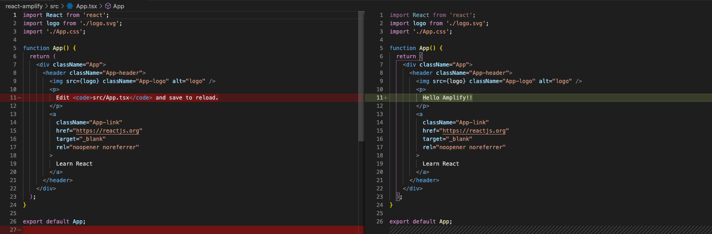
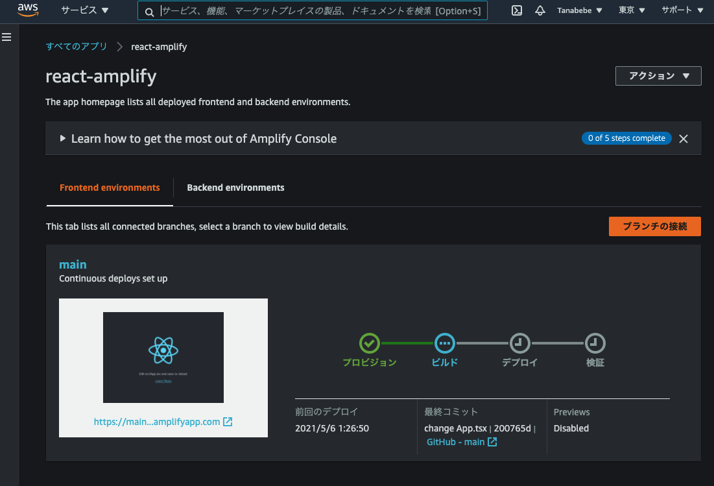
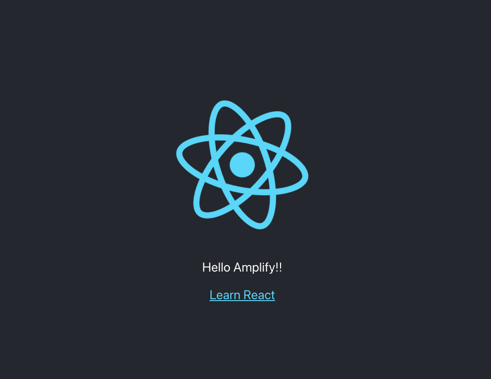

環境作成
Dockerで作成します。
docker-compose.ymlとDockerfileを用意します。docker-compose.ymlは以下の通り。
version: '3'
services:
amplify:
build: ./
ports:
- "3000:3000"
- "3001:3001"
volumes:
- ./:/var/www/amplify-demo/
- ./aws/:/root/.aws/
tty: true
Dockerfileは以下の通り。
FROM node:14.16.1
# amplify CLIをインストールする
RUN npm install -g @aws-amplify/cli
WORKDIR /var/www/amplify-demo
上記ファイルを配置するディレクトリは以下の通りです（Mac）。
/Users/{ユーザー名}/Projects/amplify-demo
├── Dockerfile
└── docker-compose.yml
作成したファイルを使用してDockerを起動します。
$ docker-compose up -d
立ち上がったらコンテナの中に入っていきますが，念の為，起動状態の確認とコンテナ名の確認を行います。以下の例だとamplify-demo_amplify_1がコンテナ名です。
$ docker-compose ps
Name Command State Ports
-----------------------------------------------------------------------------------------
amplify-demo_amplify_1 docker-entrypoint.sh node Up 0.0.0.0:8080->8080/tcp,
0.0.0.0:8081->8081/tcp
コンテナ名が確認出来たら，コンテナに入ります。
$ docker exec -it {コンテナ名(上記のName)} bash
念の為，nodeとnpmのバージョンを確認します。
$ node -v && npm -v
v14.16.1
6.14.12
さらにamplifyもインストール出来ているか確認します。
$ amplify --version
Initializing new Amplify CLI version...
Done initializing new version.
Scanning for plugins...
Plugin scan successful
4.50.2
要件を満たせているので，Reactアプリの作成をしていきます。
2. Reactアプリ作成
早速作成していきます。
$ npx create-react-app react-amplify --template typescript
しばらく時間がかかるので少し待ちましょう。
Happy hacking!とコンソールに表示されたらReactアプリの起動を確認します。
$ cd react-amplify
$ yarn start
以下の通り，画面が表示されたらOKです。

次はGitHubへリポジトリを作成し，ここまでの内容をプッシュしていきます。
3. GitHubにpushする
ご自身のGitHubアカウントへアクセスし，新しくリポジトリを作成します。

公開範囲はpublicでもprivateのどちらでもお好きな方を選択してください。

リポジトリを作成したら以下を実行しますが，Dockerのコンテナ内から実行するため，メールアドレスとユーザー名はご自身の環境に合わせて下さい。実行時にユーザー名とパスワードが求められます。
$ git init
# ※ご自身の環境に合わせて下さい
$ git config --global user.email "your-mailaddress@example.com"
$ git config --global user.name "your name"
$ git add .
$ git commit -m "first commit"
$ git branch -M main
# ※ご自身の環境に合わせて下さい
$ git remote add origin https://github.com/{your name}/react-amplify.git
$ git push -u origin main
以下の通り，反映されていればOKです。

ここまで完了したらAWSコンソールからAmplifyを使用してデプロイします。
4. Amplifyでデプロイ
AWSコンソールにサインインし，Amplifyサービスを検索，選択します。

Amplifyのサービス画面に移動したらページ下部のDeliverのGet startedを選択します。

GitHubを選択し，次へ進みます。

GitHubの認証が必要なので完了させると以下のとおり，リポジトリと連携出来るようになります。
前項で作成したリポジトリのreact-amplifyを選択し，次へを選択します。

ビルド設定の構成ではデフォルトのまま，次へを選択します。

確認まで進んだら保存してデプロイを選択します。

Amplifyによって自動でビルドされ、アプリが公開されますが検証まで完了するのは少し時間がかかります。下図の赤枠部から公開されたページに飛べます。

完了すると「2. Reactアプリ作成」で最後に確認した同じ画面が表示されます。
次はReactのコードを変更して，自動デプロイが出来るようになっているか確認していきます。
5. 自動デプロイの確認
react-amplify/src/App.tsxファイルを修正します。軽微な修正なので下図の通り，修正します。

コードは以下です。
import React from 'react';
import logo from './logo.svg';
import './App.css';
function App() {
return (
<div className="App">
<header className="App-header">
<img src={logo} className="App-logo" alt="logo" />
<p>
Hello Amplify!!
</p>
<a
className="App-link"
href="https://reactjs.org"
target="_blank"
rel="noopener noreferrer"
>
Learn React
</a>
</header>
</div>
);
}
export default App;
変更したらプッシュします。
$ git add src/App.tsx
$ git commit -m "change App.tsx"
$ git push
プッシュしたらAWSコンソールへ行き，確認します。mainブランチのプッシュを検知して自動デプロイがトリガーされているのがわかります。

修正箇所が反映されているのを確認出来たらOKです。

次はAmplifyの設定を進めていきます。
6. Amplifyのユーザー作成
Dockerコンテナに入った状態で実施していきます。amplifyの設定をしますが以下コマンド実行後は設問となるので注意して下さい。
$ amplify configure
Initializing new Amplify CLI version...
Done initializing new version.
Scanning for plugins...
Plugin scan successful
Follow these steps to set up access to your AWS account:
Sign in to your AWS administrator account:
https://console.aws.amazon.com/
Press Enter to continue
# Enterを押してOKです
Specify the AWS Region
# 以下を選択しましょう
? region: ap-northeast-1
Specify the username of the new IAM user:
# dev-amplifyとします
? user name: dev-amplify
Complete the user creation using the AWS console
https://console.aws.amazon.com/iam/home?region=ap-northeast-1#/users$new?step=final&accessKey&userNames=dev-amplify&permissionType=policies&policies=arn:aws:iam::aws:policy%2FAdministratorAccess
Press Enter to continue
# 上記URLにアクセスしてユーザの確認をします（下図を参照）
Enter the access key of the newly created user:
# 画像内のアクセスキーIDをコピペします
? accessKeyId: ********************
# 画像内のシークレットアクセスキーをコピペします
? secretAccessKey: ****************************************
This would update/create the AWS Profile in your local machine
# デフォルトを選択します
? Profile Name: default
Successfully set up the new user.
これでawsフォルダ配下にIAMのプロファイルが生成されます。
コンソール内のURLにアクセスすると以下の画面が表示されますので，ユーザー名を確認して次へ。

既存ポリシーはそのままで次へ。

タグは得に設定せず次へ（設定したい方は設定しても可です）。

ユーザー名，アクセス権限，タグの確認を行いユーザーの作成を選択します。

ユーザーが追加されるのでアクセスキーID，シークレットアクセスキーを控えて下さい。
csvのダウンロードでも可です。

7. Amplifyプロジェクトの作成
引き続きDockerコンテナに入った状態で実施していきます。こちらも前項と同じく，以下コマンド実行後は設問となるので注意して下さい。
$ amplify init
Note: It is recommended to run this command from the root of your app directory
? Enter a name for the project reactamplify
The following configuration will be applied:
Project information
| Name: reactamplify
| Environment: dev
| Default editor: Visual Studio Code
| App type: javascript
| Javascript framework: react
| Source Directory Path: src
| Distribution Directory Path: build
| Build Command: npm run-script build
| Start Command: npm run-script start
# Yesを選択
? Initialize the project with the above configuration? Yes
Using default provider awscloudformation
# AWS profileを選択
? Select the authentication method you want to use: AWS profile
For more information on AWS Profiles, see:
https://docs.aws.amazon.com/cli/latest/userguide/cli-configure-profiles.html
# defaultを選択
? Please choose the profile you want to use default
Adding backend environment dev to AWS Amplify Console app: d2nvyvjheogdaz
⠇ Initializing project in the cloud...
# 途中略...
✔ Successfully created initial AWS cloud resources for deployments.
✔ Initialized provider successfully.
Initialized your environment successfully.
Your project has been successfully initialized and connected to the cloud!
Some next steps:
"amplify status" will show you what you've added already and if it's locally configured or deployed
"amplify add <category>" will allow you to add features like user login or a backend API
"amplify push" will build all your local backend resources and provision it in the cloud
"amplify console" to open the Amplify Console and view your project status
"amplify publish" will build all your local backend and frontend resources (if you have hosting category added) and provision it in the cloud
Pro tip:
Try "amplify add api" to create a backend API and then "amplify publish" to deploy everything